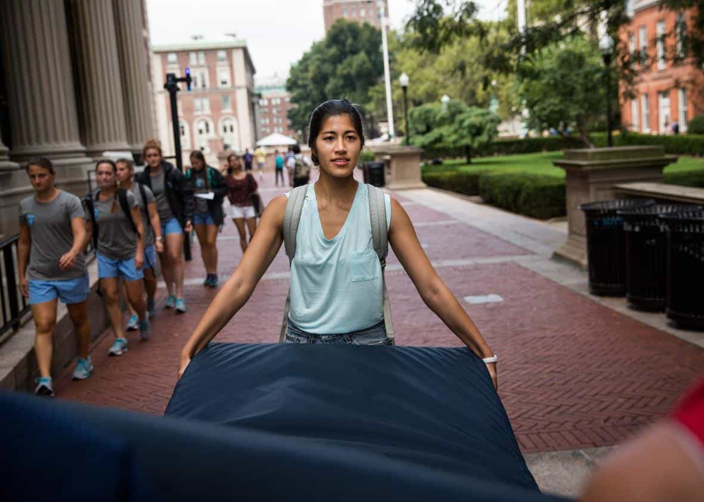

< < < Back
Arrests Of Two Olympic Boxers In Rio Shows How False Rape Hysteria Has Gone Global – Return Of Kings
The opening ceremony flag bearer for Namibia, Jonas Junias, has been arrested for allegedly attempting to rape (by kissing!) an athletes’ village cleaner during the 2016 Rio de Janeiro Olympics. Junias, a former Commonwealth Games silver medalist, joins fellow pugilist Hassan Saada of Morocco in having his Olympic dreams quickly ruined.
Saada, too, stands accused of trying to rape by kissing one housekeeper and groping the breasts of another. The Moroccan, arrested before the opening ceremony, has definitely lost his chance to compete and the same outcome is 99% likely for Junias. The two men’s ordeals demonstrate how “rape” hysteria has truly gone global.
Irrespective of whether the allegations are proven to be unfounded, insufficiently supported by the evidence (irrespective of any later conviction), or outright malicious, the men have inexcusably lost their right to a fair trial and the presumption of innocence. Perhaps the most troubling aspect of this news out of Rio is the farcical nature of Brazilian sexual assault and rape legislation.
Under the country’s perverse criminal laws, any “sexual” act without consent is considered within the ambit of rape or attempted rape. Return Of Kings is unambiguously against rape, but nonetheless supports (1) the bringing of hard evidence that fully accords with the standard of beyond reasonable doubt and (2) the proper separation and weighting of specific acts found within sexual assault allegations, especially between obviously different concepts like kissing and penetration.
Because men are almost always expected to escalate sexual activity, whilst women retain plausible deniability, “sexual assault” laws like those found in Brazil are sure-fire ways to convict men of acts that should not even be considered crimes. Comparatively benign moves such as holding a girl’s hand (before she has made it clear she does not want it) can be considered “sexual.” Combined with courts’ willingness to believe women without a shred of objective evidence like video recordings or clear proof of injury, it is now decidedly easy to either ruin the reputations and livelihoods of innocent men for life, or get them incarcerated for alleged crimes they did not commit or were not adequately proven to have committed.
A “positive” publicity boon for Brazilian police
Like his fellow boxer Junias, Hassan Saada is in a world of trouble for allegations that probably have no zero supporting, valid evidence.
Given the high-profile incidents involving serious, violent crimes in Rio over the last few weeks, the arrests of the Namibian and Moroccan Olympic competitors is something close to a godsend for local law enforcement. Instead of actually having to solve crimes where evidence exists, such as violent and/or bloody muggings or the theft of US$30,000 of photographic equipment caught on camera, authorities in Rio can make themselves look good merely by arresting two guys on the basis of women’s separate testimonies.
Olympic athletes, tourists and even Rio’s own residents are nearly completely vulnerable to dangerous crime. The police, despite the efforts of the majority of good officers in Rio, are at a loss in being able to crack down on local troublemakers, miscreants and sociopaths. What better way to shift the attention by arresting and imprisoning two guys in situations where the “evidence” comes down to a pathetic he-said-she-said dynamic?
The arrests make all the more political sense when we consider the parlous state of both the Brazilian economy and society. Under Dilma “Love me because I’m a female politician” Roussef, Brazil has suffered the worst economic downturn in living memory, senior politicians are under the pump for endemic corruption, and violent crime has spiraled completely out of control, leading to most Brazilians living in an outright or constant back-of-the-mind fear for their safety.
Evidence, evidence, evidence… where is it in these cases?
If someone is said to have stolen $50,000 from a bank, the police do not simply transfer someone to jail to await trial. They may interview them for some hours and go through the necessary checks, yet unless the money is found in the suspect’s possession, they have been caught on CCTV during a robbery, or something similar, continued detention and a trial, let alone a valid conviction, are not likely. The same goes for those accused of murder, serious assault, or other serious crimes.
With sexual assault and rape allegations, however, this general principle is easily and most often punted. I cannot get you put on trial usually for theft or assault just on my testimony, without supporting evidence or injury, but close to any woman nowadays can achieve this by crying sexual assault, rape, or even just “he kissed me!” Standards for making arrests, imprisoning suspects, initiating trials, and convicting defendants are watered-down and plain gerrymandered when it comes to men accused of sexual assault, rape, or attempted sexual assault/rape.
Another telling problem is why two Olympic boxers would be targeting athletes’ village cleaners and housekeepers. Rio de Janeiro’s crime and problematic living conditions for many aside, the city is home to some of the hottest women in the world. The influx of athletes and tourists has only added to Rio’s status as a mecca for hot women, as evidenced by my article this week about The 10 Hottest Girls Of The Olympics. Junias and Saada may not have the most ripped bodies of the male competitors or the best sporting pedigrees, but as Olympians they would be more than capable of getting at least some semi-quality tail consensually.
And what about the prospect of the two men having been extorted? Accusations against both of them mentioned the Olympians having offered “money for sex.” There is a distinct possibility and even the probability that the men were asked to hand over money and refused, leading to a dishonest counter-argument from the women that they were offered money for sex by the men and then “assaulted.” Most of the village cleaners and housekeepers for the Rio Olympics are poverty-stricken, after all.
The “rape culture” narrative must go on

Rape allegations + art project = man guilty!
Men are prone to rape and therefore the accusing woman is always right. This is what the “rape culture” narrative, now endorsed by enough police officers and prosecutors, boils down to. Just as kissing is now equated with penetration in jurisdictions like Brazil, looking at women, including those wearing basically nothing in order to get attention, is also part of the overall rape culture for feminist SJWs.
Even if we stopped criticizing the “attempted rape” charges leveled at Jonas Junius and Hassan Saada, there were measures that could have been taken to allow them to compete and respect their right to a fair trial. Their passports could have been easily seized and the Namibian and Moroccan Olympic Committees would have been able to provide strong guarantees for the athletes’ compliance. Rather than this kind of much more reasonable option, the men have been imprisoned based on women’s words.
If you thought vague, illogical notions of rape culture were merely part and parcel elements of college campuses, you have been proven decisively wrong. Rape hysteria has gone global and will continue to do so markedly in the coming years. Watch your back.
 If you like this article and are concerned about the future of the Western world, check out Roosh's book Free Speech Isn't Free. It gives an inside look to how the globalist establishment is attempting to marginalize masculine men with a leftist agenda that promotes censorship, feminism, and sterility. It also shares key knowledge and tools that you can use to defend yourself against social justice attacks. Click here to learn more about the book. Your support will help maintain our operation.
If you like this article and are concerned about the future of the Western world, check out Roosh's book Free Speech Isn't Free. It gives an inside look to how the globalist establishment is attempting to marginalize masculine men with a leftist agenda that promotes censorship, feminism, and sterility. It also shares key knowledge and tools that you can use to defend yourself against social justice attacks. Click here to learn more about the book. Your support will help maintain our operation.
Read More: The 10 Hottest Girls Of The Olympics